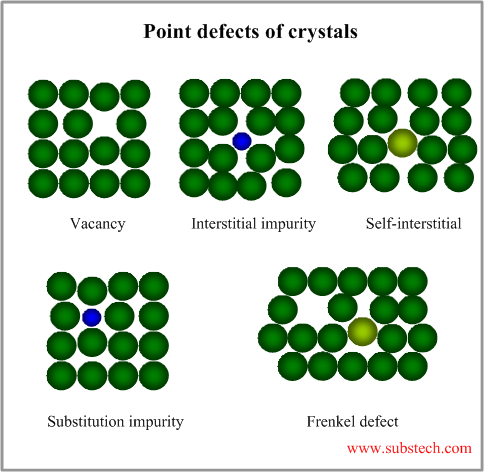
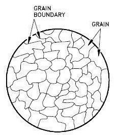

Real crystals are never perfect. They contain defects that significantly influence their mechanical properties[cite: 12, 13].
- Point Defects: Occur at a single lattice site. Types include vacancies (missing atoms), interstitial impurity atoms, substitutional impurity atoms, and self-interstitial atoms[cite: 12].
- Line Defects (Dislocations): There are two main types: Screw dislocations and Edge dislocations. An Edge dislocation forms by the insertion of an extra half-plane of atoms[cite: 12].
- Planar Defects: Surface imperfections in crystalline materials, most notably Grain boundaries[cite: 12].

Solidification & Grains
When liquid metals freeze, solidification occurs in three stages: Nucleation, Growth of crystals, and Formation of the grain structure[cite: 12].
A grain is simply a group of atoms packed in a particular orientation that differs from its neighbor's orientation[cite: 12]. The surface that separates two adjacent grains is the grain boundary[cite: 12].

Practice Exercises
Test your knowledge on Crystal Defects and Solidification.
1. Which of the following is an example of a point defect?
A) Edge dislocation
B) Grain boundary
C) Vacancy
2. What type of line defect is formed by the insertion of an extra half-plane of atoms into the lattice?
A) Screw dislocation
B) Edge dislocation
C) Substitutional impurity
3. Grain boundaries are classified as what type of defect?
A) Point defect
B) Line defect
C) Planar defect
4. What is the very first stage in the solidification of metals?
A) Nucleation
B) Growth of crystals
C) Formation of grain structure
5. What defines a "grain" in a crystalline material?
A) A microscopic void space in the lattice
B) An impurity atom substituting a parent atom
C) A group of atoms packed in a specific orientation different from neighbors